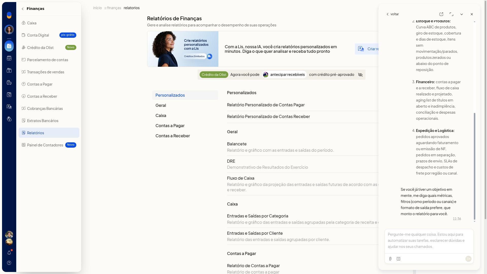

Criar um relatório personalizado com a Lis
Você pede um relatório personalizado à Lis da Olist a partir dos relatórios de Vendas ou de Finanças, sem sair desses menus. Dá para descrever a análise no chat ou partir de um modelo pronto.
A Lis informa que consolida análises sob medida, gera gráficos, exporta em CSV, PDF ou Google Sheets e agenda automações periódicas. As áreas citadas são Vendas e Comercial, Estoque e Produtos, Financeiro e Expedição e Logística.
Instruções
Pelo chat
-
Acesse Vendas > Relatórios ou Finanças > Relatórios.
-
Clique em Criar relatório com a Lis.
-
Leia a resposta no painel.

-
Use o campo Pergunte-me qualquer coisa para dizer o que quer analisar. Para anexar um arquivo, clique em Fazer upload de arquivo. O upload aceita imagem, PDF e CSV. O painel mostra o que a Lis informa que consegue analisar e exportar.
Por um modelo
-
Acesse Vendas > Relatórios ou Finanças > Relatórios.
-
Clique em Criar relatório com a Lis.
-
Abra Modelos.
-
Pesquise em Pesquisar modelos... ou percorra a lista até o fim. Você localiza um modelo pronto para iniciar o relatório sem digitar o pedido.

Resultado
O painel da Lis mostra a resposta com áreas, métricas e formatos de exportação. Em Modelos, a lista pesquisável fica disponível até o último modelo.
Informações adicionais
O que a Lis informa que entrega
- análises sob medida e gráficos
- exportação em CSV, PDF ou Google Sheets
- automações periódicas
O banner de Criar relatório com a Lis informa: Com a Lis, nossa IA, você cria relatórios personalizados em minutos. Diga o que quer analisar e receba tudo pronto.